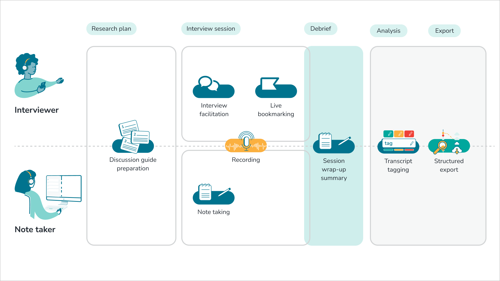
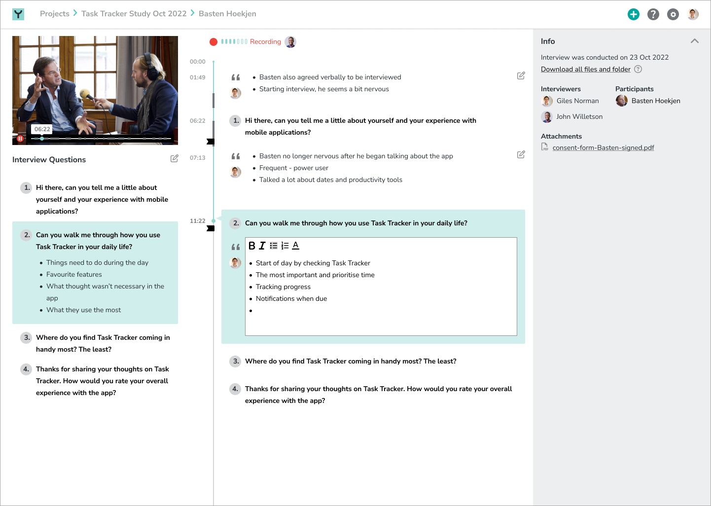
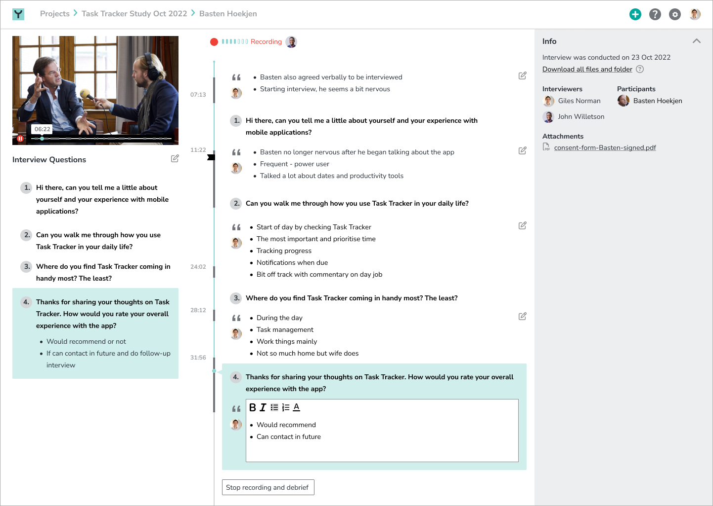
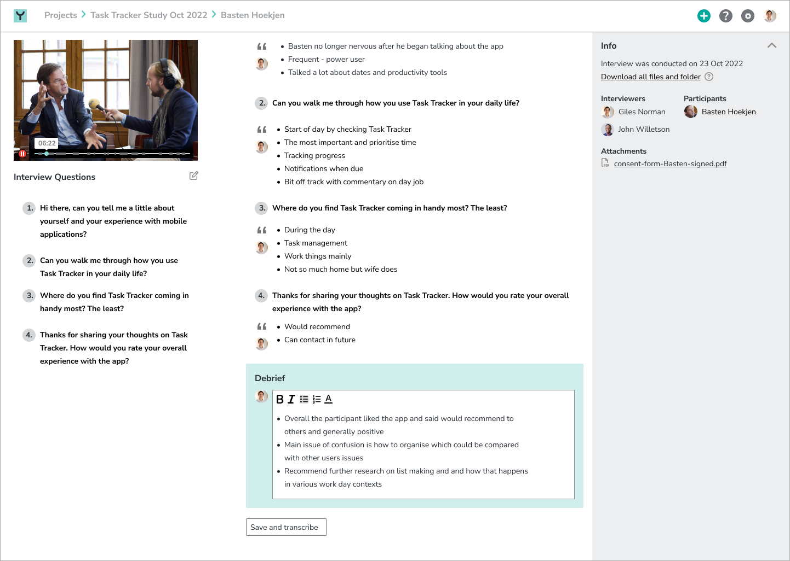
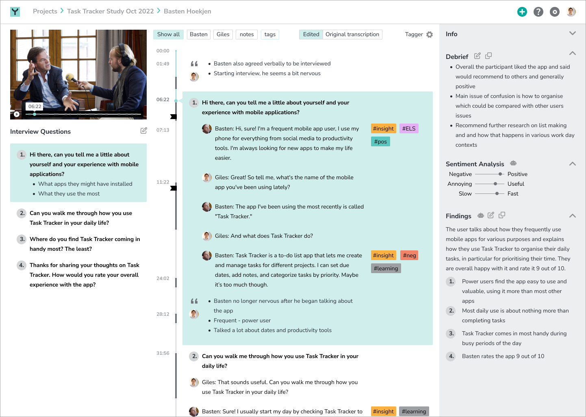
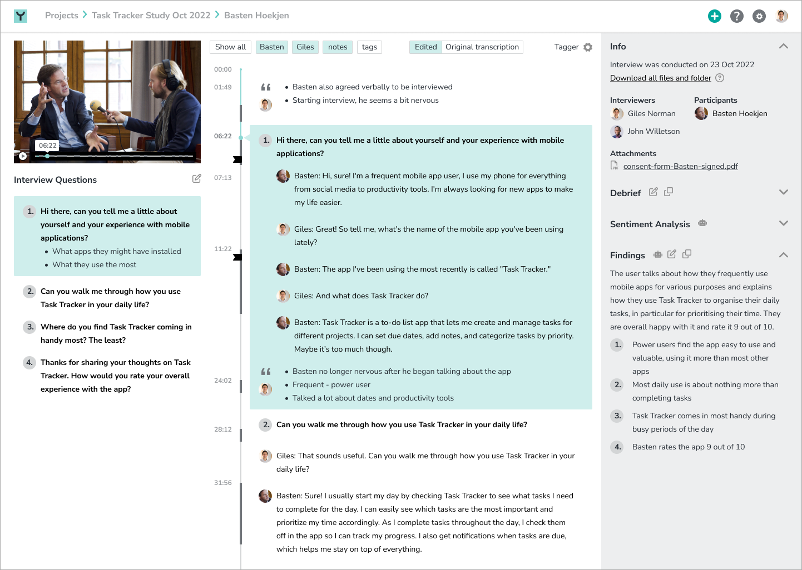

Overview & Challenge
Yleos is a startup and product that is focused on recording, annotating and analysing interviews. While there are many interview and user research focused tools, none focus on producing structured and reusable data which interviewers and researchers can easily and quickly action.
Yleos was interested in reexamining their current product and addressing concerns about how to deal with unresolved issues on the roadmap, namely how to handle transcripts and how to integrate video playback which was not yet in any interface they had. They were also interested in opportunties with using Machine Learning (ML) and AI to meet user needs with interveiwing, namely analysis and gathering findings, sentiment analysis and transcriptions clean-up.
Role & Approach
My role on Yleos was to design a user interface that addresses and distills leadership’s needs and balances them with user feedback while pointing to new product possibilities.
Results
The Yleos service is multi-modal and multi-faceted. Ideally there are two people in the session, the notetaker and the interviewer. Once recording, the interviewer’s job is to focus on the facilitating the interview. During recording, the interviewer can add bookmarks to points in the interview to come back later and comment. Meanwhile, the note taker marks the timeline of the recording with questions from discussion guide format which during transcription structures the interview. The actual recording could be done with the Yleos mobile app, which any external users, such as the note taker can see and interact with synchronously. Otherwise, the audio and/or video recording can be uploaded later to be synced with the notes and discussion guide structure.

Interview support and note taking



- Overall more readable and balance interface with a more comprehensive UI grid and implemented more accessibility best practices
- Design of recording mode for the note taker with interface for taking notes and progressing marking of interview through question structure
- Takes into account feedback from users and stakeholders about debriefing immediately after the interview being the most valuable part, and puts that automatically into the UI for the user, and then allows them to save and transcribe.
Review and analysis


- Reorganised the timeline interface to integrate transcripts to utilise Yleos’s unique proposition of being able to tie everything in the interview recording to a question and answer structure as well as giving the user a way to customise their timelines and transcriptions
- Designing in features that could utilise ML/AI to produce not only a short synapsis of the interview but sentiment analysis as well. Also, the AI would also produce answer summaries to the interviewer’s questions, thus closing the loop between questions and answer directly
- Answers interviewers and user researchers needs in terms of debriefing and analysis and integrating that into a single, well organised video and transcript interface